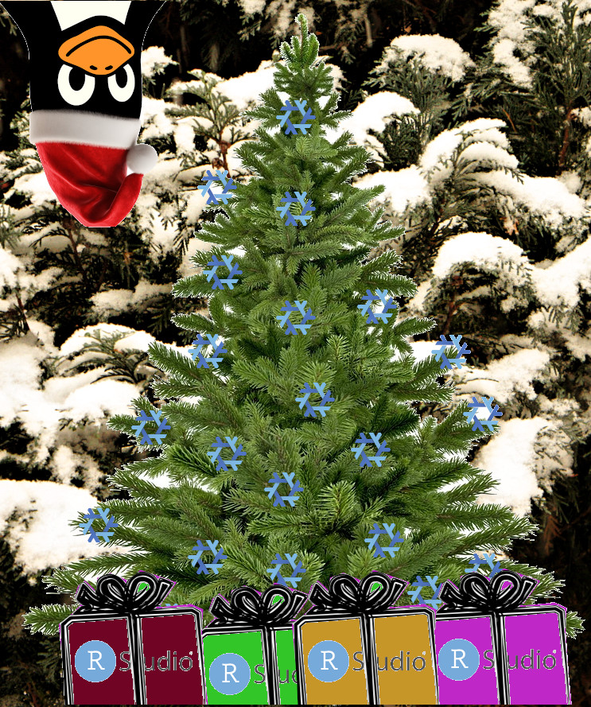

Reproducible data science with Nix, part 8 – nixpkgs, a tale of the magic of free and open source software and a call for charity

This is part 8 of a series of blog posts about Nix. Check out the other parts here. TLDR: free and open source software is one of the most important common goods with enormous positive externalities: if you want to help funding it, keep reading!
I wanted to quickly discuss about nixpkgs, which is the collection of packages that can be installed using Nix. Why is a project like Nix and nixpkgs important, even if you don’t use Nix? In actuality, you may not realise it, but you very much benefit from projects like Nix even if you don’t use it. Let me explain.
nixpkgs is “just” a Github repository containing thousands upon thousands of Nix expressions. When installing a package, these expressions get evaluated, and the package in question gets installed. What installed means can vary: sometimes the package gets built from source, sometimes a pre-compiled binary package for your operating system gets downloaded and installed.
For example, here is the Nix expression that downloads and installs Quarto. This is an example of an expression that downloads the pre-compiled Quarto package from Quarto’s own Github repository, and then installs it. The installation process in this case is essentially making sure that Quarto is able to find its dependencies, which also get installed from Nix, and some R and Python packages to make Quarto work well with both languages also get installed.
Because Nix packages are “nothing but” Nix expressions hosted on Github, contributing to Nix is as simple as opening a PR. For example, here is a draft PR I opened to prepare for the imminent release of Quarto 1.4. My goal when I opened this draft PR was to get used to contributing to nixpkgs (this was my second or third PR to nixpkgs, and I did some rookie mistakes when opening my first ones) and also to make the latest version of Quarto available on Nix as quickly as possible. But this PR had an unexpected consequence: through it, we found a bug in Quarto, which was then fixed before the actual release of the next version!
You see, how these things work is that when software gets released, operating system specific packages get built downstream. In the case of Quarto, this is not entirely true though: the developers of Quarto release many pre-compiled packages for Windows, macOS and several Linux distribution themselves. But they don’t do so for many other operating systems (which is entirely normal: there’s just too many! So releasing pre-built binaries for the main operating systems is more than enough), so the maintainers of these other operating systems (or package managers) have to package the software themselves. In the case of scientific software like Quarto, this usually means that it must get packaged for the Conda package manager (popular among Python users) and Nix (and there’s certainly other package managers out there that provide Quarto for other exotic systems) (Note: in the case of Quarto, I think the Quarto devs themselves also package it for Conda, though).
Turns out that when trying to package the pre-releases of Quarto for Nix, we discovered a regression in the upstream code that would not only affect packaging for Nix, but also for other package managers. We opened an issue on Quarto’s issue tracker and after some discussion, the bug was identified and adressed in a matter of hours. And now everyone gets to enjoy a better version of Quarto!
This type of thing happens quite a lot in the background of open source development. My mind always gets blown when I think about the enormous amount of hours that get put by hobbyists and paid developers into open source and how well everything works. Truly a Christmas miracle (but one that happens all around the year)!
But it’s not all good and perfect. Some software is more complex to package, and requires much more work. For example the RStudio IDE is one of these. It’s a complex piece of software with many dependencies, and while it is available on Nix, it can only be installed on Windows and Linux. If you’re a Nix user on macOS, you won’t be able to install RStudio, unfortunately. And, unfortunately also, if you install RStudio using the usual macOS installer, it won’t be able to find any version of R and R packages installed with Nix. This is because RStudio needs to be patched to make it work nicely with Nix (just like we have to patch and prepare Quarto to play well with Nix). And packaging Rstudio for Nix on macOS requires some expertise and hardware that we R users/contributers to Nix don’t have all have access to.
This is where I appeal to your generosity: I have contacted a company called Numtide which offers a packaging service. You tell them which software you want on Nix, they write the expression and open a PR to nixpkgs. But this costs money: so I started a Gofundme which you can find here to fund this. The goal is 4500€, which would cover the work, plus Gofundme fees and interest rate risk. I stated in the Gofundme that if the goal was not reached until the end of the year, I would donate all the money to the R foundation, but I might extend it to end of January 2024 instead.
So here is my ask: if you want to help make free and open source software better, consider donating to this Gofundme! As explained above, even if you don’t use Nix, everyone can benefit from work that is done by everyone, be it upstream or downstream. And if the goal is not met, your donation will go to the R foundation anyways!
The link to the Gofundme is here.
I hope you can help out with this and make free and open source available and better for everyone.
Many thanks, merry Christmas and happy new year!